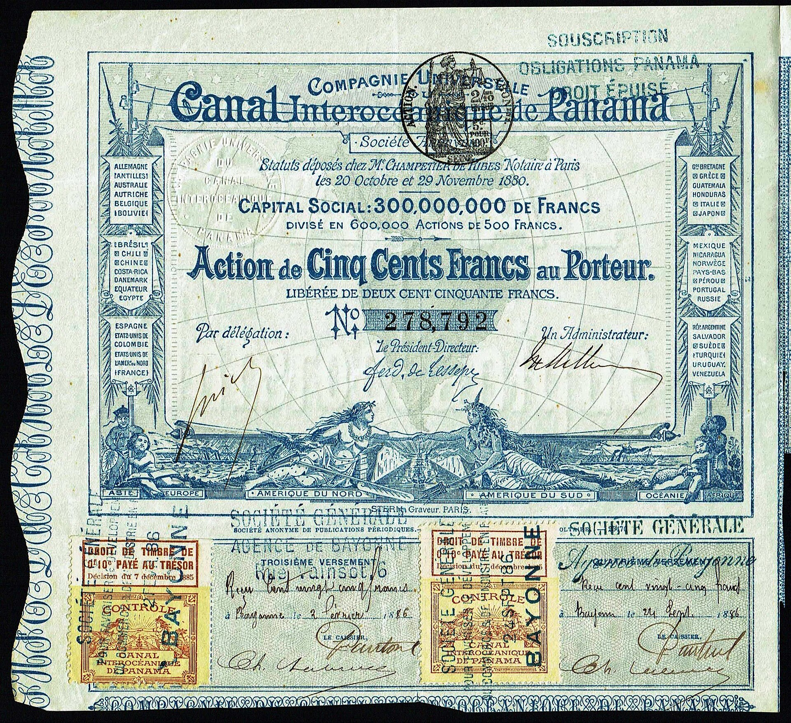

Chapter 3
The Company Built on a Name
The subscription books for the Compagnie Universelle du Canal Interocéanique opened in Paris on 8 January 1880, a year before the company’s first public report would assert that the surveys had validated the congress’s decision. By the close of the first day, the entries exceeded 400 million francs against an initial capitalization of 300 million. The oversubscription was immediate. The books recorded names, addresses, sums, and the signatures of notaries who verified each entry. Among the subscribers were merchants, civil servants, widows with annuities, provincial doctors, and retired military officers whose individual commitments ranged from five shares to five hundred. The aggregate was a map of French capital drawn from every region that the railways had reached.
The money was pledged against a design for a sea-level canal at Panama that no completed survey had yet validated. The engineers’ warnings sat in the company’s archives, documented and unaddressed, while the capital raised against the sea-level design continued to grow.

This was not an accident of timing. The congress of May 1879 had chosen sea level before the field data could be weighed publicly. The Chagres River in flood was a known hazard. The rainfall at Culebra exceeded any Suez equivalent.
The tidal range at Panama complicated any open channel between two oceans. These were not speculative concerns. They were measurements taken by the company’s own survey teams, and they were known to the engineering directorate before a spade touched ground.
The Compagnie Universelle du Canal Interocéanique was constituted less as an engineering enterprise than as a financial instrument organized around one man’s reputation. That origin determined almost everything that followed.
Ferdinand de Lesseps was seventy-four years old when the subscription books opened. He had completed the Suez Canal in 1869. That achievement was the company’s primary asset — not the concession from Colombia, not the surveys, not the congress resolutions. The prospectus issued to subscribers invoked Suez repeatedly. It named de Lesseps as president. It listed his title, Grand Officier de la Légion d’Honneur. It cited the 1869 inauguration ceremony attended by Empress Eugénie. The document did not cite the Chagres River, which would become a raging torrent, rising up to 10 m (33 ft) during the rainy season. It did not cite the rainfall measurements taken at Gamboa in November 1879.
It did not cite the tidal differentials that the survey teams had recorded at Colón and Panama City. The prospectus presented the isthmus as a problem already solved by the precedent of Suez, and it presented de Lesseps as the man who had solved it. The conversion of reputation into capital was the company’s founding mechanism.
Suez had taken ten years and cost approximately 432 million francs, a sum that had exceeded the original estimate by a factor of two. The Panama prospectus projected 1.2 billion francs and twelve years. The ratio of cost to estimate was not discussed.
The prospectus treated the projection as authoritative because it carried de Lesseps’s name, and the subscribers treated the name as sufficient because Suez had succeeded. The confidence capital generated by that name was immense. It reached into households of modest means through the mechanism of the lottery bond, a financial instrument that combined the security of a bond with the speculative appeal of a lottery. The lottery bond was not de Lesseps’s invention.
The French state had used the mechanism for public loans since the 1820s. The Compagnie Universelle adapted it for private capital.
Each bond carried a face value of 500 francs and paid interest at a rate set by the company’s statutes. A portion of the bond issue was designated for periodic lottery drawings, in which selected bonds would be redeemed at a premium above face value. The premium was the incentive. The subscriber who purchased a lottery bond was lending to the company at a fixed rate and purchasing a chance at a large return. That chance was tied to the company’s solvency, which was tied to the canal’s completion, which was tied to de Lesseps’s reputation for delivering canals. The mechanism embedded public enthusiasm into fixed obligations that only rapid completion could satisfy.
The bond structure created a specific temporal pressure. The company owed interest on the full issue from the date of subscription. The lottery drawings were scheduled at intervals that assumed construction revenue would begin within the first three years.
If construction did not produce revenue — if the canal was not open to traffic, or at least open to toll collection within a projected window — the company would have to service its debt from new capital rather than from operating income. The prospectus did not explain this structural feature. The subscribers who read only the promotional literature saw a bond backed by de Lesseps’s name and by the concession from the Republic of Colombia. The subscribers who read the statutes saw a company whose debt schedule assumed a construction timeline that no completed survey had confirmed.
The board of directors reflected the same priority. The founding council included Henri de Puyfontaine, a former diplomat; Joseph Baillot, a manufacturer; and Count Ferdinand de Lesseps as president. The engineering representation was present but subordinate. The board’s composition signaled that the company’s central function was financial. Its purpose was to raise capital, deploy it under the sea-level design, and generate returns within the bond schedule. Engineering judgment that contradicted the schedule was not a board-level concern.
It was an operational matter to be handled by the technical staff in Panama, who were expected to execute the design, not to question it. The engineers who were sent to the isthmus understood this hierarchy.
The field surveys of 1879 and 1880 had produced specific warnings about the Chagres River, about rainfall and tidal range at Panama, and about what a sea-level cut would demand of men and machines. The Chagres, which drained a basin of approximately 1, 000 square kilometers, rose rapidly during the rainy season. The survey teams had recorded flood levels that exceeded any equivalent condition at Suez. The rainfall at Culebra, the highest point on the route, exceeded 3 meters annually. The tidal range at Panama City on the Pacific side differed from the range at Colón on the Atlantic, a fact that complicated any sea-level design requiring a channel open to both oceans.
These were not speculative concerns. They were measurements. The measurements were filed. The company’s engineering directorate in Paris received them.
The directorate could not act on them because acting on them would have required revising the design that the congress had approved and that the prospectus had offered to subscribers. The company leadership would not revise the design because the capital was being raised against it. To acknowledge that the sea-level plan was unworkable would have been to acknowledge that the prospectus was misleading and that the subscriptions obtained under it were obtained on false premises. The design was fixed. The capital was flowing in. The warnings sat in the archives.
The divergence between French promotional accounts and the technical record begins here. The company’s bulletins described momentum. They reported subscriptions, equipment purchases, and the departure of engineers. They described the isthmus as a site where work was beginning. The reports from the field described something different. They described a route where the terrain had not been fully surveyed, where the Chagres had not been gauged across a full rainy season, and where the infrastructure to support a workforce of thousands did not exist.
The company’s promotional literature described a project in motion. The engineering reports described a project that had not yet established its physical parameters. The early recruitment decisions reflected the same pattern.
The company hired workers and engineers on the assumption that the sea-level design would proceed as planned. Dredges were ordered from manufacturers in France and Belgium on the basis of the Suez precedent, where dredging had been the primary excavation method. The Suez route had been a sea-level cut through flat desert, and the dredges had been effective. The Panama route included the Culebra Cut, a section through the continental divide where the rock required different equipment. The company ordered dredges anyway. The orders were placed before the surveys of Culebra were complete. The purchasing decisions were shaped by confidence in the Suez model, not by measured capacity at the isthmus.
The first engineers arrived at Colón in 1880. The port facilities were minimal. The town had a single pier, a railway depot built by the Panama Railroad Company in 1855, and a population of approximately 3, 000.
The company’s initial contingent established a camp at the mouth of the Chagres River, where the survey teams had worked the previous year. The camp had no hospital, no adequate water supply, and no drainage system. The engineers who had warned about the Chagres in their reports now camped at its mouth. The river’s flood stage was months away. The warnings about it were in the archives in Paris. The camp was built on the assumption that the design would proceed.
The board meeting of February 1881 addressed the question of the engineering staff. The minutes, preserved in the company’s records, show that the board received a report on the isthmus surveys. The report noted the Chagres River and the rainfall. The board’s response was to authorize additional purchases of dredging equipment and to approve the recruitment of a larger workforce. The reservations in the report were noted. They were not acted upon. The subscription timetable required the company to demonstrate progress. Progress, in the terms the prospectus had established, meant excavation. Excavation meant dredges. The dredges were ordered.
The reservations were filed. The lottery bond mechanism intensified the pressure. The first drawing was scheduled for 1881. The company needed to show subscribers that the enterprise was advancing. The promotional bulletins published in Paris described the arrival of equipment, the establishment of camps, and the beginning of work at the mouth of the Chagres. The bulletins did not describe the engineering reports that questioned whether a sea-level cut was feasible at Culebra. They did not describe the tidal range differential. They did not describe the absence of hospital facilities at Colón. The bulletins presented a picture of a project proceeding according to plan, and the bondholders read that picture as confirmation that their investment was sound.
The company’s financial structure thus created a feedback loop. De Lesseps’s reputation generated subscriptions. The subscriptions created fixed obligations. The obligations required demonstrated progress. Demonstrated progress required the company to report momentum. The reports of momentum reinforced the reputation. The engineering warnings that contradicted the momentum had no point of entry into this cycle. They existed in the archives. They were documented.
They were not addressed. The cycle continued because each element reinforced the next, and because the man whose name drove the cycle had no incentive to interrupt it. His name was the company’s primary asset. Interrupting the cycle would have diminished the asset.
A counter-explanation is straightforward. The sea-level excavation through the Culebra Cut, the management of the Chagres River, and the disease environment of the isthmus presented challenges that no company could have solved at any plausible cost within the technology of the decade.
This argument has merit. The Culebra Cut alone required the removal of approximately 60 million cubic meters of rock and earth. The Chagres River, in flood, carried volumes that no dam of the period could have contained without the kind of lock-and-lake system that Adolphe Godin de Lépinay had proposed at the 1879 congress. Lépinay’s plan was dismissed in favor of de Lesseps’s proposal for a sea-level canal, although the locks plan would later be implemented under American control.
The disease environment — yellow fever and malaria — would kill thousands of workers before the French effort ended. These were real constraints. No amount of organizational competence could have eliminated them. But the constraints do not explain the company’s structure.
The company was not organized to assess and respond to those constraints. It was organized to raise capital against a design chosen before the constraints were measured. The engineering reports existed. The board received them. The board’s response was to proceed with the design because the capital was tied to it.
The company’s failure was not simply a failure of engineering or medicine. It was a failure of the decision system that the company’s financial structure had created. That system could not process doubt because doubt threatened the confidence capital on which the company depended. The name was the asset. The asset could not be questioned.
The company’s relationship to the French state was embedded in this structure from the beginning. The lottery bonds were a private adaptation of a state financial instrument.
The subscribers who purchased them were French citizens who understood the bond as a quasi-public obligation, backed by de Lesseps’s name and by the implicit standing of a project that the French government had permitted, that French notaries had authenticated, and that French newspapers had endorsed. The company was a private enterprise. Its capital was raised from the public. The state had not guaranteed the bonds. But the subscribers’ understanding of the bonds was shaped by the state’s tolerance of the mechanism and by de Lesseps’s standing as a public figure who had been decorated by two emperors and received by the National Assembly. The company built on a name invited state protection. It did not need it yet.
But the structure of the investment — public capital, private management, a national hero as president — meant that any future failure would not remain a private matter. The first year of operations confirmed the pattern. The company’s reports described progress. The field reports described difficulty.
The dredges that arrived at Colón were suited to the flat conditions of Suez, not to the rock of Culebra. The workforce that was recruited included French engineers, West Indian laborers, and contract workers from Colombia. The camp at the mouth of the Chagres had no medical infrastructure. The first cases of fever were reported in the company’s correspondence in 1881. They were not reported in the promotional bulletins. The correspondence described them as incidental. The bulletins described the project as advancing.
The gap between the correspondence and the bulletins was not a matter of deception. It was a matter of structure.
The company’s financial obligations required the bulletins to describe progress. The engineering staff’s reports described conditions.
The two documents served different functions. The bulletins served the subscribers. The reports served the engineering record. The subscribers read the bulletins. The engineers wrote the reports.
The board received both. The board acted on the bulletins because the bulletins sustained the confidence that sustained the capital. The reports were filed because filing them was the procedure.
The procedure did not require action. It required documentation. The documentation accumulated. The surveys of the Chagres basin, the rainfall records, the tidal measurements, the reports on the Culebra rock, the correspondence from the camp at the river’s mouth — all of it entered the company’s archives. The archives grew. The capital grew. The two grew together, the warnings and the money, each documented, each unaddressed, each tied to the other by the structure of a company that could not question its founding design without questioning the capital that the design had raised.
The lottery bond drawings proceeded on schedule. The first drawing took place in 1881. The winning bonds were redeemed at the premium the prospectus had promised. The redemption was funded from the capital reserve, not from operating revenue, because the canal was not yet open and no tolls had been collected. The company was paying its bondholders from the money it had raised from them. The capital raised against the sea-level design was being consumed by the obligations that the design had created.
The consumption would continue until the canal opened or until the capital was exhausted. The engineering reports in the archives indicated that the canal would not open within the projected timeline.
The bond schedule indicated that the capital would be consumed before that timeline expired. The two trajectories — the engineering trajectory and the financial trajectory — were on a collision course. The engineering trajectory said that the sea-level design required more time, more money, and more capacity than the prospectus had projected. The financial trajectory said that the company had a fixed amount of capital, a fixed schedule of debt service, and a fixed obligation to demonstrate progress to its subscribers. The point at which these two trajectories would intersect was the point at which the company would have to choose between revising its design and exhausting its capital.
The company’s structure did not permit that choice. The design was the capital. Revising the design would have required revising the capital. The capital was fixed.
At Colón, where the single pier extended into the harbor and the railway depot stood at the edge of the town, the first dredges were assembled in 1881. The equipment was heavy. The pier was not reinforced for industrial loads. The railway, built by the Panama Railroad Company two decades earlier, had a single track and was not designed for the volume of material that the canal excavation would require.
The infrastructure at Colón was the infrastructure of a transit point, not of an industrial construction base. The company’s engineers reported this. The reports were sent to Paris. The company continued to order equipment through the port of Colón because the port was the only Atlantic entry point on the route. The orders were placed on the assumption that the port could handle them. The assumption was based on confidence, not on measured capacity.
The same pattern governed the Pacific side. At Panama City, the company established a secondary base. The tidal range on the Pacific coast differed from the Atlantic range.
The survey teams had recorded the difference. A sea-level canal open to both oceans would have been subject to the tidal differential between them, which meant that the channel would have experienced variable currents and water levels that no single elevation could accommodate without regulatory structures.
The surveys noted this. The design did not include regulatory structures because the design was a sea-level cut, and a sea-level cut, by definition, had no locks. The warnings about the tidal range were filed with the warnings about the Chagres and the warnings about the rainfall. They were all in the same archive. They were all unaddressed.
The company’s first annual report, issued in 1881, described the progress of the first year. It listed the equipment purchased, the workforce recruited, the camps established, and the excavation begun. It did not list the engineering reservations. It did not list the tidal differential. It did not list the absence of hospital facilities. It did not list the first cases of fever. It described a company that was building a canal. The subscribers read the report.
The bondholders read the report. The newspapers summarized the report. The confidence held. The capital continued to flow.
The confidence was the company’s product. It was what the company manufactured. It did not manufacture a canal.
It manufactured the belief that a canal was being built, and it sold that belief to subscribers who purchased bonds against it. The belief was sustained by de Lesseps’s name, by the promotional bulletins, by the lottery drawings, and by the absence of any public statement contradicting the design. The engineering reports that contradicted the design were not public. They were internal documents, filed in the company’s archives, accessible to the board and to the engineering directorate. The board did not publish them. The board did not act on them. The board acted on the bulletins.
The structure was now complete. The company had a design that its own engineers had questioned. It had capital raised against that design. It had bonds that required the design to succeed within a specific timeline.
It had a board that could not revise the design without threatening the capital. It had a president whose reputation was the company’s primary asset and whose reputation required the design to proceed. It had an engineering staff in Panama whose reports documented the gap between the design and the terrain. It had a workforce at the isthmus with no medical infrastructure. It had a port at Colón that could not handle the industrial load. It had a tidal differential that the design could not accommodate. It had a river that flooded. It had rainfall that exceeded any Suez equivalent.
And it had a financial structure that converted all of these conditions into evidence of progress, because the structure required progress and could not process the alternative.
The company’s financial obligations were now fixed, handing off the pressure of a machine that must demonstrate progress to satisfy its backers, regardless of the terrain and disease it will next confront. The dredges at Colón were assembled. The camps at the mouth of the Chagres were occupied.
The first engineers had filed their reports. The first cases of fever had been noted in the correspondence. The lottery drawings were scheduled. The interest was owed. The capital was committed. The design was set. The isthmus was waiting.